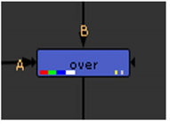

用导航打开主题
你可能已经注意到节点在视觉上指示了它们正在处理的通道 (也就是说，以某种方式处理) 和传递 (也就是说，没有任何处理的传递)。这是通过彩色矩形系统来完成的，该系统允许您跟踪整个脚本中的通道流。
仔细看看这个示例节点。宽矩形表示通道 Nuke 进程 (在这种情况下是红色、绿色、蓝色和 alpha 通道)。狭窄的矩形表示通道 Nuke 传递到下一个节点而不进行处理 (在这种情况下, 遮罩.软 和 遮罩.硬 )。

额外的视觉确认 通道。